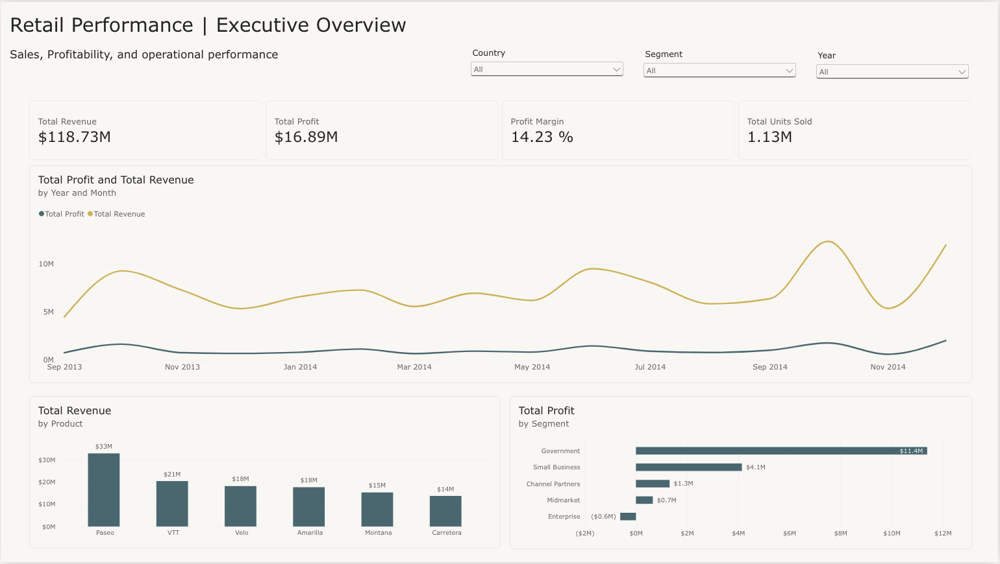
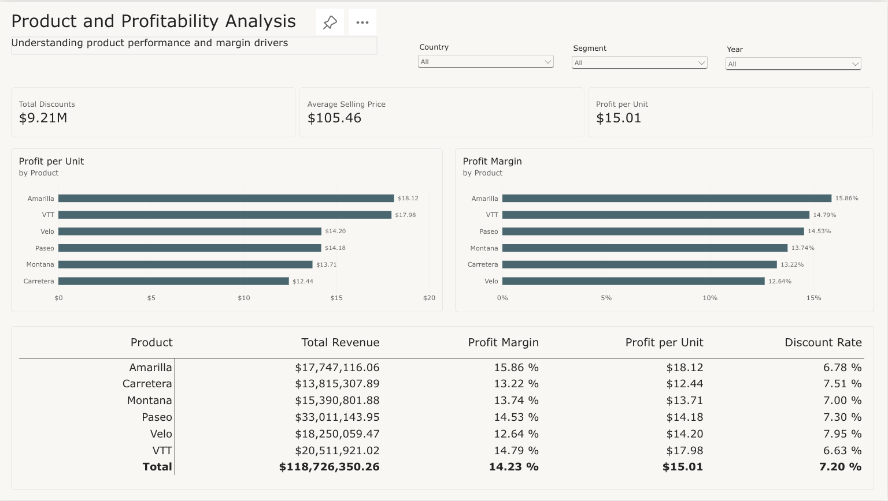
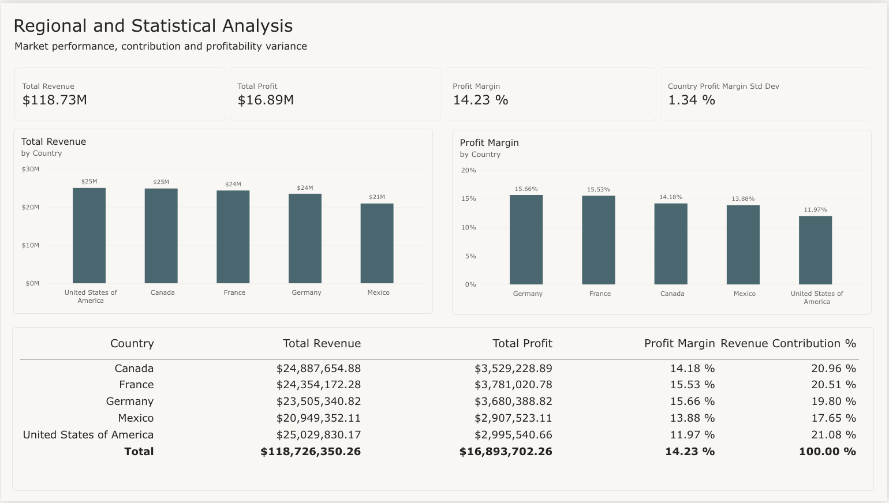

$118.73M
Total sales revenue
A documented business intelligence case study demonstrating analytical methods, data visualization, Power BI development, statistical interpretation, and business-oriented decision support.
Modern businesses operate in data-rich markets where sales, pricing, product mix, and geography interact. BI turns operational records into indicators that can help managers compare performance and investigate opportunities.
Figures shown in the Executive Overview screenshot. This is a synthetic/sample dataset and does not represent a real retailer or current economic conditions.
I selected a public dataset, imported it into Power BI Service, created DAX measures, assembled interactive report pages, and interpreted visible findings. This case study documents my individual contributions, analytical decisions, validated results, and the limitations of the public sample data.
All screenshots and quantitative claims are limited to work shown in this portfolio.
Focused on retail revenue, product profitability, discounts, business segments, and geographic performance. Selected metrics that connect operational activity to financial outcomes.
DocumentedUsed Microsoft's Financial Sample Excel workbook and imported the financials table into Power BI Service. Relevant columns include Sales, Profit, COGS, Discounts, Gross Sales, Units Sold, Product, Segment, Country, and Date.
Built measures for total revenue, total profit, profit margin, units sold, average selling price, profit per unit, discounts, and discount rate. Measures recalculate with report filter context.
CompletedCreated three report pages: Executive Overview, Product & Profitability, and Regional & Statistical Analysis. Built KPI cards, monthly trends, product and country comparisons, slicers, and detailed matrices.
CompletedCompared product revenue with per-unit profitability and evaluated differences in revenue, profit, and margin across countries. Distinguished descriptive evidence from causal claims.
DocumentedOrganized screenshots, calculations, business questions, interpretation, and learning-outcome mapping into a self-contained portfolio. A secure Power BI embed has been added; the author confirms evaluator access. The public-data report’s refresh schedule is not represented as a production deployment.
Ready for reviewTotal Revenue = SUM('financials'[Sales])
Total Profit = SUM('financials'[Profit])
Profit Margin = DIVIDE([Total Profit], [Total Revenue], 0)
Total Units Sold = SUM('financials'[Units Sold])
Total Discounts = SUM('financials'[Discounts])
Average Selling Price = DIVIDE([Total Revenue], [Total Units Sold], 0)
Profit per Unit = DIVIDE([Total Profit], [Total Units Sold], 0)
Discount Rate = DIVIDE([Total Discounts], SUM('financials'[Gross Sales]), 0)DAX definitions reflect the measures discussed and the displayed report metrics. Validate exact names against the final semantic model before submission.
I imported Microsoft’s Financial Sample as a single financials table. For this small, self-contained dataset, the model lets me demonstrate reusable measures and interactive filter context without introducing unnecessary relationships. It is not a star schema.
Trade-off: A single table is simple to build and audit, but can duplicate descriptive attributes and becomes less suitable for large, multi-source reporting. A future production design could separate fact sales from date, product, country and segment dimensions, with validated one-to-many relationships.
Total Profit / Total Revenue reproduces the displayed overall margin.These are the documented validation checks to perform or demonstrate; they are not a claim of a formal automated test suite.
| Measure | Definition | Business meaning |
|---|---|---|
| Total Revenue | SUM(financials[Sales]) | Sales in current filter context |
| Total Profit | SUM(financials[Profit]) | Absolute profit |
| Profit Margin | DIVIDE([Total Profit],[Total Revenue],0) | Profit per dollar of sales |
| Profit per Unit | DIVIDE([Total Profit],[Total Units Sold],0) | Profit normalized by unit volume |
| Discount Rate | DIVIDE([Total Discounts],SUM(financials[Gross Sales]),0) | Discounts as share of gross sales |
| Revenue Contribution | DIVIDE([Total Revenue],CALCULATE([Total Revenue],ALLSELECTED(financials[Country])),0) | Country share among selected countries |
Formula definitions are reproduced for review. Editor screenshots are useful supplementary evidence; actual DAX measure existence can also be inspected in the shared Power BI report/model where permissions allow.
Use the interactive report below to switch between the Executive Overview, Product & Profitability Analysis, and Regional & Statistical Analysis pages. Try the slicers to examine how the metrics respond to different selections.
Secure Power BI embed · Microsoft sign-in and report access may be required
If the report prompts for sign-in or does not load, open it using the button above. The three static dashboard screenshots below remain available as evidence without Power BI access. A secure embed does not grant report permissions to the viewer.
The overview combines financial KPIs, monthly revenue/profit trends, product revenue rankings, segment profitability, and interactive Country, Segment, and Date slicers.

Evidence: screenshot captured November 13, 2026. Values reflect the sample dataset and current filter state.
Interpretation: The report shows approximately $118.73M in revenue and $16.89M in profit, equivalent to a 14.23% margin. The Government segment leads in absolute profit, while Enterprise shows negative profit in the displayed selection. Monthly analysis reveals variation hidden by annual aggregation.
This page uses KPI cards, product-level profit per unit, profit margin comparisons, and a detailed matrix to distinguish high-volume products from high-margin products.

Evidence: screenshot captured November 13, 2026, before later cosmetic formatting refinements.
Interpretation: Paseo generates the most revenue (about $33.01M), while Amarilla has the highest displayed profit per unit ($18.12) and margin (approximately 16%). Revenue leadership does not necessarily imply the highest unit profitability.
I built country-level revenue and profit-margin comparisons, four KPI cards (including country profit-margin standard deviation), and a matrix with revenue, profit, margin and revenue contribution. This page helps separate market size from profitability and supports comparative statistical reasoning.

Evidence: Power BI Service screenshot supplied November 13, 2026. Values are from Microsoft's Financial Sample dataset.
The United States leads in sales but trails all other countries on margin. Germany's margin is 3.69 percentage points higher than the United States'. This indicates an opportunity to investigate cost structure, discounting and product mix—not proof of the underlying cause.
Data presentation note: The screenshot's Revenue Contribution column displays fractions (e.g. 0.21), which should be formatted as 21% in the final Power BI report.
Revenue contribution divides each country's revenue by revenue across the selected countries. Profit margin divides profit by revenue. These measures answer different questions: relative size versus efficiency.
Revenue Contribution % =
DIVIDE(
[Total Revenue],
CALCULATE([Total Revenue],
ALLSELECTED('financials'[Country])),
0
)
Profit Margin =
DIVIDE([Total Profit], [Total Revenue], 0)The formulas document the intended calculation; the screenshot confirms resulting country-level values, not the measure editor itself.
Revenue contribution is displayed as a percentage in the final report, totaling 100.00% across the five countries. The report also displays the country-level profit-margin standard deviation of 1.34%, providing a descriptive measure of cross-market variation.
In addition to my public-data Power BI case study, I have applied business intelligence and process automation in a finance department. The examples below describe my personal responsibilities at a high level, without sharing employer data, financial results, client information or internal screenshots.
Business need: Make performance indicators used in bonus tracking easier to monitor.
My contribution: I personally built a KPI report for bonus tracking and published a Power BI dashboard at CenCore. I have also maintained a published dashboard, giving me experience beyond creating report visuals.
BI skills: Translating performance questions into KPIs, developing an accessible report, publishing to a workspace, and maintaining reporting for ongoing use.
Business need: Give Accounts Receivable and the Controller a report they can use when preparing month-end reporting.
My contribution: I completed a revenue report designed to support the AR team and Controller in creating the month-end report. I am also building a broader set of departmental reports; that larger reporting initiative remains in progress.
BI skills: Understanding stakeholder requirements, structuring finance metrics, creating reusable report views, and delivering reporting aligned to an accounting workflow.
Business need: Reduce repetitive invoice preparation and increase consistency.
My contribution: I created an invoice automation solution using Power Automate, Office Scripts and Excel-based invoice templates. The workflow applies invoice preparation rules and supports more consistent outputs. My work included developing the automation and resolving issues during testing.
BI and delivery skills: Turning business requirements into logic, validating outputs, troubleshooting exceptions, and supporting a repeatable financial process.
Current scope: I am building reporting for the broader finance department. The completed revenue report is one deliverable within that work.
Status distinction: I do not present the entire department-wide reporting initiative as finished or deployed. It demonstrates ongoing stakeholder-driven BI development rather than a completed project.
Professional evidence boundary: These are first-person descriptions supplied for this portfolio. No CenCore report, dataset, financial result, or proprietary artifact is reproduced. Details about Proofpoint or UVU projects are intentionally not asserted without confirmed examples.
| Learning outcome | Public retail project | Professional application |
|---|---|---|
| 1 · BI opportunities | Product, market and profitability questions | Bonus tracking and month-end revenue reporting needs |
| 2 · Analytical methods | DAX aggregation, ratios, time trends and segmentation | KPI design and finance-focused revenue reporting |
| 3 · Visualization | Three Power BI pages, charts, matrices and slicers | Published KPI dashboard and completed revenue report |
| 4 · BI software | Power BI Service, Excel and DAX measures | Power BI, Power Automate and Office Scripts |
| 5 · Statistical reasoning | Margins, per-unit measures, revenue shares and comparisons | Performance indicators used in bonus tracking |
| 6 · BI services | Analysis, report development, validation and delivery | Published and maintained reporting; AR/Controller support; invoice automation |
Each outcome identifies what the evidence demonstrates and what would strengthen the submission. The course's first outcome is numbered 1 here, followed by outcomes 2–6.
Evidence: Business context, public retail data, geographic and segment dimensions, and financial KPIs. The project illustrates how organizations can analyze large collections of operational measures across products, countries, and time.
Business opportunity: Identify low-margin markets, prioritize product mix, and examine discounting practices before making pricing decisions.
Global BI context: Organizations combine data from sales platforms, financial systems, supply chains, customer transactions, and regional operations to compare performance across markets. These data-rich environments create opportunities for demand analysis, pricing decisions, resource allocation, and identifying underperforming segments. However, differences in currencies, accounting definitions, collection methods, data quality, access controls, and privacy regulations can undermine comparisons. Effective BI therefore requires standardized measures, validation, governance, and careful interpretation. This public Microsoft sample illustrates comparative analysis; it is not evidence of current global retail trends.
Additional evidence: The regional dashboard compares five countries, showing how multinational retail data can reveal different market opportunities. The United States has the highest sales but lowest margin, highlighting a business opportunity to investigate efficiency.
Evidence: Aggregation (SUM), ratios (DIVIDE), time-series comparisons, ranking by product, segmentation, and cross-filtered comparisons. Monthly trend charts and profit-by-segment analysis show how different groupings answer different questions.
My work: Defined measures, assigned visual dimensions and metrics, sorted comparisons, and changed a 100% stacked bar to a clustered bar to correctly represent absolute profit.
Additional evidence: Country-level grouping, revenue contribution, normalized margin comparisons, and ranking by revenue versus profitability. France leads absolute profit while Germany leads margin.
Evidence: Executive Overview and Product & Profitability screenshots; KPI hierarchy; line charts for trends; horizontal bars for comparisons; a matrix for detailed analysis; slicers for interactive exploration.
My design rationale: Put high-level performance first, then offer progressively detailed product and segment views. Corrected a misleading percentage-scaled chart and expanded annual trends to months for more informative comparisons.
Additional evidence: The Regional & Statistical Analysis page uses aligned horizontal bar charts and a numeric matrix to communicate differences in absolute sales and relative profitability.
Evidence: Power BI Service on macOS, Excel import, semantic model, DAX measures, report visuals, slicers, and formatting.
My work: Imported the financials dataset, created reusable measures, configured visuals and interactive filtering, and iteratively refined the report based on observed behavior.
Supporting evidence: the report is securely embedded and accessible to the evaluator according to the author. A DAX editor screenshot would further strengthen implementation evidence.
Additional evidence: Built a third report page in Power BI Service and applied country-level measures in visuals and a matrix.
Evidence: Profit margin as a normalized comparison; profit per unit as a per-unit efficiency metric; discount rate as a proportional measure; comparisons across product categories.
Interpretation: A high total revenue product may not lead on margin or per-unit profit. Ratios help compare differently sized groups, while totals show absolute business impact. Aggregated sample data cannot establish whether discounting causes lower profitability.
Statistical technique implemented: I added a DAX population standard deviation measure across the five country-level profit margins. The Regional and Statistical Analysis report displays approximately 1.34%, meaning about 1.34 percentage points of dispersion. The measure treats each selected country equally; it is not the same as the revenue-weighted overall profit margin of 14.23%. A manager can use this variability measure to flag differences in market profitability for further investigation, but it does not identify causes or quantify forecasting uncertainty.
Country Profit Margin Std Dev =
STDEVX.P(
ALLSELECTED('financials'[Country]),
[Profit Margin]
)Additional evidence: Germany’s 15.66% margin exceeds the United States’ 11.97% by 3.69 percentage points. Comparing a ratio with absolute revenue avoids treating the largest market as automatically the most profitable. Revenue share is a part-to-whole statistic; the current screenshot shows decimal fractions that should be percentage-formatted.
A standard-deviation card is not visible in the supplied screenshot and is not claimed as completed.
Evidence: End-to-end case study covering business questions, data sourcing, calculations, visual design, quality checks, interpretation, and delivery documentation.
My work: Translated business questions into metrics and interactive reports, validated that the visuals used appropriate scales, and summarized findings in business language for a nontechnical reviewer.
Additional professional evidence: I built and published KPI reporting, maintained a published Power BI dashboard, completed a revenue report for AR and Controller month-end reporting, and created invoice automation.
Additional evidence: Translated a regional performance question into measures, two ranked comparisons, and a reviewable matrix; communicated a specific, actionable investigation into cost and product mix without asserting causation.
Source: Microsoft Power BI Financial Sample workbook (public sample data).
Microsoft sample documentation ↗
Tool: Power BI Service in a web browser on macOS.
Reproduction: Import the Financial Sample workbook, verify the financials table, create the documented measures, and build the visual layouts shown above.